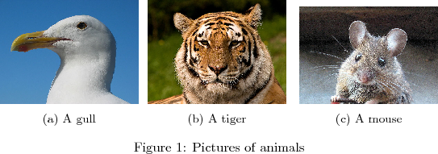
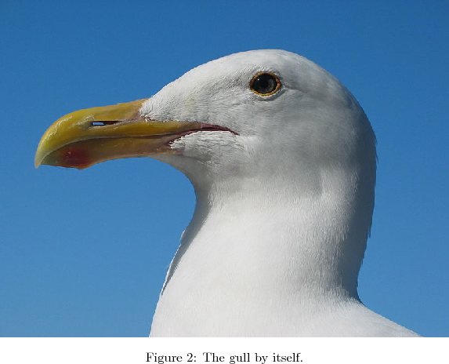
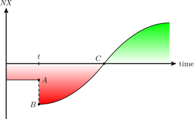

Convenience...
... always wins. Writing technical articles in , keeping them under version control, and editing them in your favourite editor is convenient, whereas editing code in a browser, writing technical articles in HTML, or keeping Wordpress under version control is not; at least not for me. And converting  code to HTML is inconvenient ... on a good day.
code to HTML is inconvenient ... on a good day.
Nobby and Nobby2WP are my tools to get that convenience. Nobby converts  articles to HTML and Nobby2WP uploads them to a Wordpress server. Needless to say I wrote this entire post in
articles to HTML and Nobby2WP uploads them to a Wordpress server. Needless to say I wrote this entire post in  , used Nobby for the HTML conversion, and published it with Nobby2WP on this very page. Feel free to inspect the source code for this post or read it in PDF form.
, used Nobby for the HTML conversion, and published it with Nobby2WP on this very page. Feel free to inspect the source code for this post or read it in PDF form.
Disclaimer: when it comes to  HTML converters no one size fits all. Consider this post a demonstration of Nobby's abilities to help you decide if it may be for you. If not, here are some alternatives you may want to consider: latex2wp, Lyx2Wordpress, latex2html, PlasTeX and SnuggleTeX.
HTML converters no one size fits all. Consider this post a demonstration of Nobby's abilities to help you decide if it may be for you. If not, here are some alternatives you may want to consider: latex2wp, Lyx2Wordpress, latex2html, PlasTeX and SnuggleTeX.
For more information about Nobby visit its GitHub page or read the documentation.
Note: This article does not cover Nobby2WP. See project description for a brief example instead.
1 Formatting
Here is Pythagoras' theorem in an align environment: Here it is again as an inline formula: .
Nobby automatically escapes the <> characters. You may therefore write <strong> or </strong> without accidentally inserting HTML tags. Furthermore, Nobby translate quotation characters (eg “text in quotes”) and escaped  symbols like “$”, “{“, “}” and “%” to proper HTML, ie without the leading backslash.
symbols like “$”, “{“, “}” and “%” to proper HTML, ie without the leading backslash.
You can, of course, emphasise something or make a bold statement by using the standard  \emph and \textbf commands.
\emph and \textbf commands.
Inline math expressions like  or work fine too.
or work fine too.
You can also force Nobby to render normal text via  by putting it into double braces:
by putting it into double braces:
Many  macros have equivalents in HTML, for instance \ldots. Nobby features a plugin system to control the macro conversion. For instance, there is already a plugin for \ldots so you can already use it... no need to write it yourself.
macros have equivalents in HTML, for instance \ldots. Nobby features a plugin system to control the macro conversion. For instance, there is already a plugin for \ldots so you can already use it... no need to write it yourself.
Likewise, some fonts have HTML equivalents as well. Since font changes in  are also only macros Nobby's plugin system already covers them too, for instance to produce the typewriter font.
are also only macros Nobby's plugin system already covers them too, for instance to produce the typewriter font.
1.1 Environments
Nobby knows how to recognise  macros and environments, but not what they mean. Whenever it finds a macro or environment it looks for an associated plugin. If no such plugin exists then it passes the code verbatim to
macros and environments, but not what they mean. Whenever it finds a macro or environment it looks for an associated plugin. If no such plugin exists then it passes the code verbatim to  and inserts the result as an image into the HTML page.
and inserts the result as an image into the HTML page.
In this section I will demonstrate some of the default plugins for frequently used environments.
1.1.1 Itemize
1.1.2 Enumerate
- Item 1
- Item 2
1.1.3 Equation
1.1.4 Theorem Environments
The AMS package provides a way to define theorem environments with \newtheorem{theorem}{Theorem}. Nobby assumes that “lemma”, “theorem”, “example”, “corollary” and “definition” are defined in the document preamble. The HTML conversion will fail if not.
Nobby ships with a single plugin to handle all theorem environments. Here are some examples.
Here is a theorem from Wikipedia (compare Nobby's and Wikipedia's version in terms of quality!).
Theorem 1: Divergence Theorem
Suppose  is a subset of (in the case of , represents a volume in 3D space) which is compact and has a piece wise smooth boundary (also indicated with ). If is a continuously differentiable vector field defined on a neighbourhood of , then we have
is a subset of (in the case of , represents a volume in 3D space) which is compact and has a piece wise smooth boundary (also indicated with ). If is a continuously differentiable vector field defined on a neighbourhood of , then we have
A definition from Wikipedia:
Definition 1: Divergence in Cartesian Coordinates
Let be a system of Cartesian coordinates in 3-dimensional Euclidean space, and let be the corresponding basis of unit vectors. The divergence of a continuously differentiable vector field is equal to the scalar-valued function:
Here is yet another definition from Wikipedia to demonstrate the continuous enumeration of environments and equations. Note that the definition references its own equations (the original is again from Wikipedia).
Definition 2: Laplace Operator
The Laplace operator is a second order differential operator in the  -dimensional Euclidean space, defined as the divergence of the gradient . Thus if
-dimensional Euclidean space, defined as the divergence of the gradient . Thus if  is a twice-differentiable real-valued function, then the Laplacian of is defined by where the latter notations derive from formally writing . Equivalently, the Laplacian of is the sum of all the unmixed second partial derivatives in the Cartesian coordinates As a second-order differential operator, the Laplace operator maps -functions to -functions for . The expression (5) (or equivalently (6)) defines an operator , or more generally an operator for any open set .
is a twice-differentiable real-valued function, then the Laplacian of is defined by where the latter notations derive from formally writing . Equivalently, the Laplacian of is the sum of all the unmixed second partial derivatives in the Cartesian coordinates As a second-order differential operator, the Laplace operator maps -functions to -functions for . The expression (5) (or equivalently (6)) defines an operator , or more generally an operator for any open set .
You can reference Theorem 1, Definition 1 and Definition 2 with the usual \ref macro. Alternatively, you may also reference them with the \hyperref macro and link directly to the Divergence Theorem, the Definition of Divergence, or the Definition of the Laplacian.
Theorem 2:
There is no largest integer.
Proof: Suppose there were a largest integer . Then it must be true that for all . However, the choice is also an integer and larger than . This contradicts the assumption that is the largest integer.
1.2 Comments
Nobby also converts  comments to HTML. You cannot see those comments because, well, they are comments, alright. To see them anyway switch to the source code view in your browser.
comments to HTML. You cannot see those comments because, well, they are comments, alright. To see them anyway switch to the source code view in your browser.
2 Referencing
Nobby supports references via the standard \href command. This works for equations, sections, tables, figures, and more.
For instance, here is a numbered reference to Pythagoras' theorem (1) and Einstein's famous formula (2).
You may also use the \hyperref command to create named links to reference the formulae of Pythagoras and Einstein.
Next are some examples of referenced sections.
2.1 Sub-Section
This is sub-Section 2.1 inside Section 2.
2.1.1 Sub-Sub-Section
This is sub-sub-Section 2.1.1 inside sub-Section 2.1 and Section 2. The \hyperref also works. For instance, you can link to the main section.
Starred Sub-Sub-Section
Nobby also supports starred sections.
3 Figures and Tables
Here is a floating table.  would put it at a visually pleasing position whereas Nobby puts it right where it was defined.
would put it at a visually pleasing position whereas Nobby puts it right where it was defined.
Next is a figure environment that uses the \subcaption package. The code for this example is from the Wikimedia on  . Note that the image is a PNG (hence the coarser appearance) because Nobby determined that it is too large to be included as an SVG. You can adjust the threshold where Nobby's switches from SVG to PNG images in config.py file or on the command line (see nobby -h for help).
. Note that the image is a PNG (hence the coarser appearance) because Nobby determined that it is too large to be included as an SVG. You can adjust the threshold where Nobby's switches from SVG to PNG images in config.py file or on the command line (see nobby -h for help).

Here is Figure 1a by itself. Note that the counter in the figure caption increased (as expected). 
4 TikZ Image
TikZ is a popular  package for technical drawings. Here is an example from their webpage.
package for technical drawings. Here is an example from their webpage. 